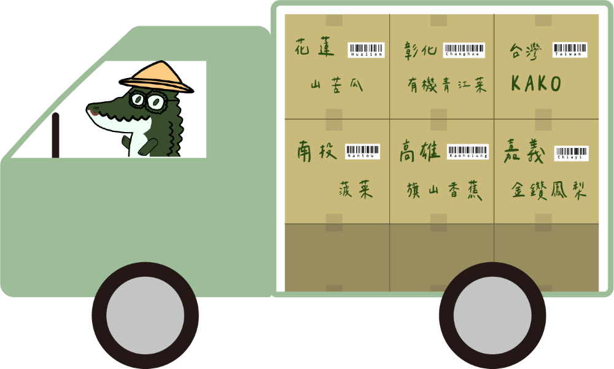
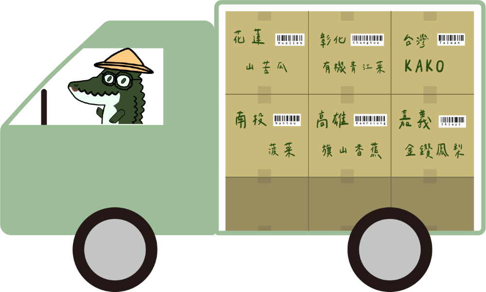

KAKO Latte用綠拿鐵帶給大家更健康的選擇。
飲品都是採用當季蔬果，天然不加糖，並現點、現做，深信新鮮是最美味的滋味。
無論是喜歡清爽的果香還是濃郁的口感，都能滿足大家的味蕾。
不管是在繁忙的一天中，還是悠閒的午後時光，讓我們一起享受生活！享受KAKO！

KAKO Latte用綠拿鐵帶給大家更健康的選擇。
飲品都是採用當季蔬果，天然不加糖，並現點、現做，深信新鮮是最美味的滋味。
無論是喜歡清爽的果香還是濃郁的口感，都能滿足大家的味蕾。
不管是在繁忙的一天中，還是悠閒的午後時光，讓我們一起享受生活！享受KAKO！
綠拿鐵是由綜合了多種蔬菜、水果、堅果攪打而成的一杯天然飲品，不僅口感美味，更擁有豐富的營養。因為添加了富有油脂的堅果一起打，所以常會打出細白的泡沫，讓口感整個清新、柔順起來，因而有了「拿鐵」的美稱，但其實綠拿鐵不含牛乳，所以與真正的拿鐵是不同的。

 

品牌介紹
品牌LOGO設計靈感來自於苦瓜，因為苦瓜為我們產品的靈魂，萬萬不可少，所以名稱取自於山苦瓜的英文 kakorot的英文縮寫KAKO，再由大地色調來搭配，成為我們簡約又好看的LOGO。

近年來飲料店在台灣掀起一陣旋風，我們注意到人們開始注重健康。
消費者開始要求好品質的茶與配料，也有人選擇只喝不加糖的果汁和茶。
因此我們想在飲料與健康中取得平衡，創造出一個健康平價為主的綠拿鐵專賣店。

MENU
關於我們